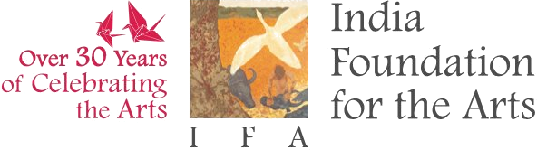
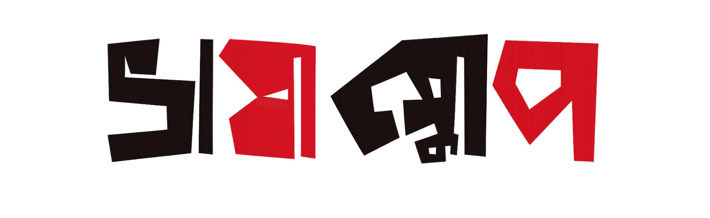

10 Bengali Creators • Qualitative Research • Bilingual Archive ১০ জন বাংলা কনটেন্ট নির্মাতা • গুণগত গবেষণা • দ্বিভাষিক আর্কাইভ
Between 2020 and 2025, something out of the ordinary happened in the Bengali digital space. Bengali YouTube started to expand rapidly. Creators from Barasat to Bankura, from Kolkata flats to tea gardens in North Bengal, built audiences in the millions — speaking a Bengali that no textbook teaches and no academy sanctions. They coined words, bent grammar, and moved fluidly across dialects. In the process, these creators didn’t merely produce videos, they redefined what Bengali can sound like on screen. A register significantly different from the polished Bengali for Television or Radio audience. ২০২০ থেকে ২০২৫ — এই পাঁচ বছরে নীরবে এক সাংস্কৃতিক পরিবর্তন ঘটেছে। বাংলা ইউটিউব হঠাৎ করেই দ্রুত বিস্তার লাভ করেছে। বারাসাত থেকে বাঁকুড়া, কলকাতার ফ্ল্যাট থেকে উত্তরবঙ্গের চা-বাগান—বিভিন্ন প্রান্তের নির্মাতারা লক্ষ লক্ষ দর্শক গড়ে তুলেছেন। তারা এমন এক বাংলা ভাষায় কথা বলছেন, যা কোনও পাঠ্যবই থেকে শেখা নয়, তাকে কোনও প্রতিষ্ঠানও নিয়ন্ত্রণ করে না। এক ঝাঁক নতুন শব্দ তৈরি হয়েছে, ব্যাকরণ গোঁত্তা খেয়েছে, ভাষা ও উপভাষা মিলে মিশে একাকার হয়েছে স্বতঃস্ফূর্তভাবে। এই প্রক্রিয়ায় তাঁরা শুধু ভিডিও বানাননি—স্ক্রিনে বাংলা ভাষার শোনার ভঙ্গিটাকেই বদলে দিয়েছেন।
Platform Bengali is documenting ten of these creators — not as influencers or celebrities, but as cultural practitioners whose creative labour, linguistic choices, and platform strategies constitute a form of art. Each interview is a 3 – 4 hour, in-depth research conversation, producing bilingual transcripts that will be permanently archived on the Bhashascope digital repository. প্ল্যাটফর্ম বাংলা এই পরিবর্তনেরই চিত্রগুপ্ত। এখানে দশজন নির্মাতাকে নথিবদ্ধ করা হচ্ছে—ইনফ্লুয়েন্সার বা সেলিব্রিটি হিসেবে নয়, বরং সাংস্কৃতিক অনুশীলনকারী হিসেবে। তাদের সৃজনশীল শ্রম, ভাষা ব্যবহারের ধরন এবং ডিজিটাল প্ল্যাটফর্ম নিয়ে কাজ করার প্রকৌশল— এই সব কিছুকেই এক ধরনের শিল্পচর্চা হিসেবে বিবেচনা করা হচ্ছে। প্রতিটি সাক্ষাৎকার ৩–৪ ঘণ্টার একটি বিস্তৃত আলোচনা, যার দ্বিভাষিক প্রতিলিপি স্থায়ীভাবে সংরক্ষিত হবে ভাষাস্কোপ ডিজিটাল আর্কাইভে।
This is not journalism. This is not a promotional feature. This is arts research — treating YouTube creators as practitioners engaged in sustained creative work within the vernacular digital sphere, and their output as a legitimate subject of scholarly inquiry. আমাদের কাজ সাংবাদিকতা নয়, নয় কোনও প্রচারমূলক বিজ্ঞপ্তি। বরং এটি এক নতুন ধরণের কলা গবেষণা—যেখানে ইউটিউব নির্মাতাদের দেখা হচ্ছে নতুন চোখে। তাদেরকে দেখা হবে দীর্ঘমেয়াদি সৃজনশীল জীবিকায় যুক্ত মানুষ হিসেবে, যাঁরা ডিজিটাল মাধ্যমকে অবলম্বন করে জীবিকানির্বাহ করেন। তাদের কাজকে আমরা বোঝার চেষ্টা করবো বৈধ গবেষণার বিষয় হিসেবে।
What the Interviews Explore
We are documenting diversity of practice, not popularity. The ten creators span geography, gender, scale, and content type — food, gaming, education, satire, devotional, lifestyle, political commentary, rural craft, and more. Subscriber count does not determine selection. The project documents practice. এই প্রকল্প জনপ্রিয়তা নয়, চর্চার বৈচিত্র্য নথিবদ্ধ করে। নির্বাচিত দশজন নির্মাতা ভৌগোলিক বিস্তার, লিঙ্গ, পরিসর এবং কনটেন্টের ধরনে ভিন্ন (যেমনঃ খাবার, গেমিং, শিক্ষা, ব্যঙ্গ, ভক্তিমূলক, লাইফস্টাইল, রাজনৈতিক মন্তব্য, গ্রামীণ কারুশিল্পসহ আরও অনেক কিছু)। সাবস্ক্রাইবার সংখ্যা এখানে নির্ধারক নয়। এই প্রকল্পের মূল বিষয় চর্চা এবং অনুশীলন।
10 Creators · Interviews in Progress
Interview transcripts and creator profiles will be published here as they are completed and approved by participants. সাক্ষাৎকারের প্রতিলিপি এবং নির্মাতাদের প্রোফাইল ধাপে ধাপে প্রকাশিত হবে, অংশগ্রহণকারীদের অনুমোদনের ভিত্তিতে।
Criteria
Last date of registration: 15 May 2026 নিবন্ধনের শেষ তারিখ: ১৫ মে ২০২৬
Platform Bengali is a foundation project sponsored by the India Foundation for the Arts (IFA) under the Arts Research programme. All interviews are conducted with informed consent, and participants retain the right to review and approve transcripts before publication. Contact: bhashascope@gmail.com প্ল্যাটফর্ম বেঙ্গলি ইন্ডিয়া ফাউন্ডেশন ফর দি আর্টসের কলা গবেষণা কার্যক্রমের অন্তর্ভুক্ত। সমস্ত সাক্ষাৎকার সম্মতিসাপেক্ষে পরিচালিত হয় এবং অংশগ্রহণকারীরা প্রকাশের আগে প্রতিলিপি পর্যালোচনা ও অনুমোদনের অধিকার রাখেন। যোগাযোগ: bhashascope@gmail.com